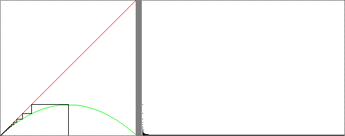

|  |
| s = 0.9 After a few transients, the isolated histogram points, the orbit approaches so near to the fixed point x = 0 that successive values fall in the same pixel. Consequently, the histogram is mostly a long horizontal line representing repeated values in that pixel. |